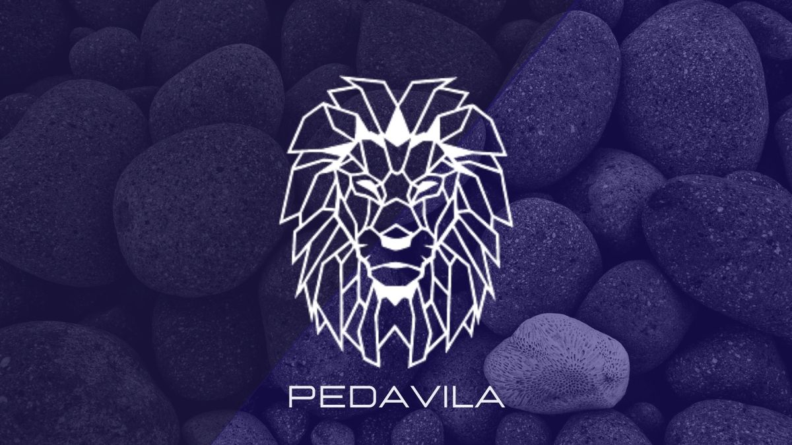

Logo Pessoal
Descrição do projeto
Logo planejada para ser utilizada pessoalmente por mim, visando ser usada em trabalhos profissionais.
A construção da logo foi baseada nos meus gostos pessoais e na etimologia do meu primeiro nome Pedro. A paleta de cores utilizada em tons de azul e o leão ao centro foram escolhidos por serem coisas que me identifico.
O nome no meio da logo vem da junção do meu primeiro e último nome, Pedro e Ávila, se tornando Pedavila. As pedras ao fundo vem do significado do nome Pedro: Nome Grego - Significado: Rocha, pedra.
←Voltar ao Portfolio